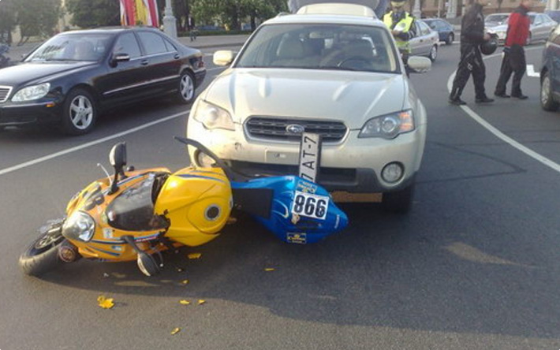
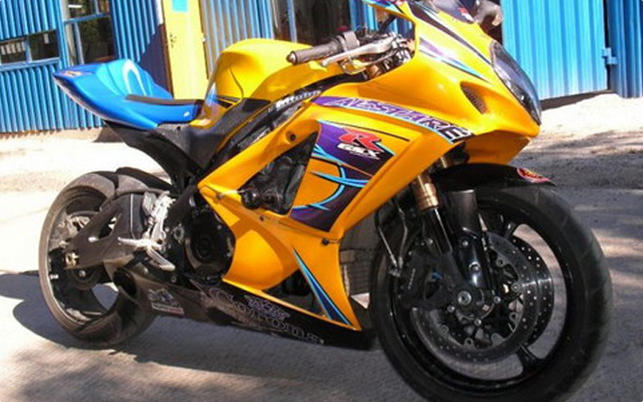

Кузовной ремонт и окраска мототехники. С каждым днём количество мотоциклов, квадроциклов, гидроциклов и снегоходов в РБ растёт в геометрической прогрессии, а вот сервисное обслуживание этой, некогда экзотической техники до сих пор официально как следует представлено не было. Мы имеем огромный опыт в восстановлении и окраске кузовов мотоциклов и всегда готовы оказать вам услуги подобного рода.
Вот такой байк к нам привезли:

А вот как мы его восстановили:
